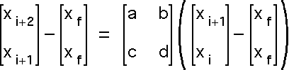
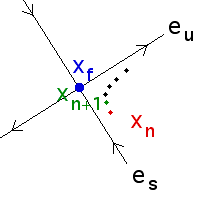
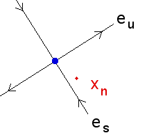
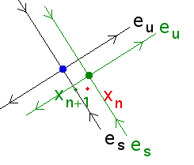
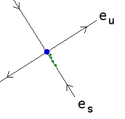
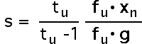

We sketch an example using a 2-dimensional reconstruction of the dynamics. That is, from the measured sequence
x1, x2, x3, ...
we construct points
(x1, x2), (x2, x3), (x3, x4), ...
1. Select those points (xi, xi+1) near the fixed point
|  |
2. Call the matrix M. Assume the fixed point is a saddle point, so M has
one unstable eigenvalue
|  |
Note that
3. To simplify the calculation, assume the fixed point
4. Now we measure how the fixed point changes with s. Denote the fixed point by
z(s) = sg.
5. Writing the vector
|  |  |  |
| xn is near the
fixed point of the |
Change s so
xn+1 lies on the stable direction
of the |
Now return to the |
6. How do we find this s? For small s the equation
xn+1 - z(s) = M(xn - z(s))
is just
xn+1 - sz = M(xn - sz)
Writing M with its eigenvectors, this becomes
xn+1 - sz = (tueufu + tsesfs)(xn - sz)
Solving this for xn+1 the equation
|  |
the OGY formula for the control of chaos.
Return to the method of Ott, Grebogi, and Yorke.